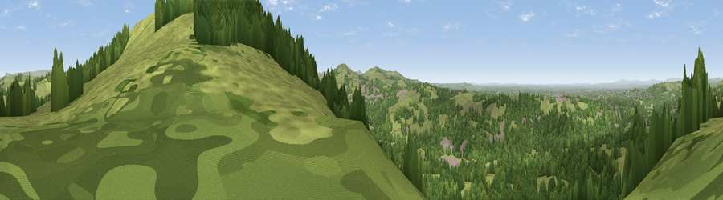

Viewpoint near Mellor
#10400 in England · top 15% of its area beats it · near MellorThe view, rendered

A 360° render of this exact spot computed from the terrain model, tree cover and land cover — summer colours, afternoon light, calibrated against photographs of famous viewpoints. Real trees, hedges and buildings will differ in detail.
The panorama
Grey silhouette: terrain skyline in each direction (720 bearings, Earth curvature and refraction included). Dashed green: skyline with trees (+15 m) and buildings (+8 m) as obstacles. Blue strip: how far the ground is visible on each bearing.
Where the view opens
Wedge length = distance to the farthest visible ground on that bearing (vegetation-aware). Rings at 10, 25 and 50 km.
What fills the view
51% grassland · 45% woodland · 4% built-up
Angular shares of the visible panorama (visual magnitude), not map area. Landscape diversity 0.37 (0–1 Shannon).
Key numbers
More beautiful places nearby
The staircase of upgrades: each row has a higher view potential than everything closer. Driving times are estimates from straight-line distance, calibrated against real road routing — check an actual route before setting out.
| Place | Direction | Drive | Score |
|---|---|---|---|
| Mellor Cross | ESE · 0 km | ~1 min | 69.5 |
| Black Hill | S · 5 km | ~12 min | 69.7 |
| Viewpoint near Compstall | NNW · 6 km | ~12 min | 72.5 |
| Harrop Edge | N · 9 km | ~18 min | 74.6 |
| Wild Bank | N · 11 km | ~20 min | 76.2 |
| Viewpoint near Carrbrook | N · 13 km | ~24 min | 77.1 |
| Viewpoint near Mow Cop | SSW · 32 km | ~50 min | 78.9 |
| Viewpoint near Mow Cop | SSW · 32 km | ~50 min | 80.2 |
53.38277, -2.02890 · source: screening · position refined by local search. Computed location — check access rights before visiting.